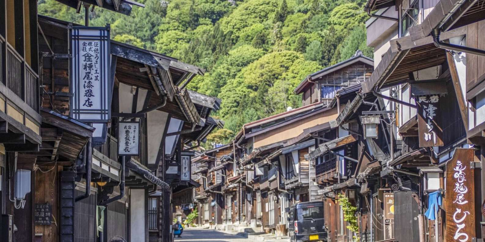

El castillo de Matsumoto o Matsumotojō (松本城) es uno de los castillos más bonitos de todo Japón y una de las principales atracciones turísticas de la ciudad de Matsumoto, en la prefectura de Nagano. Además de ser uno de los tres castillos más populares de todo Japón, por merecimiento propio. Además de esto, el castillo de Matsumoto es uno de los doce castillos originales que aún quedan en Japón. De todos ellos, sólo cinco fueron declarados Tesoros Nacionales de Japón: el castillo de Matsumoto, ejemplo de castillo construido en una llanura, el castillo de Himeji, el castillo de Hikone, el castillo de Matsue y el castillo de Inuyama. El apodo del castillo es el «cuervo negro», por el color negro de sus muros, en contraposición con la «garza blanca», apodo que recibe el castillo de Himeji.
A lo largo de estos caminos se establecieron lugares de descanso y abastecimiento para el viajero, los llamados juku. Uno de ellos era Narai-juku, tal vez el más importante del Nakasendō. En su momento, dicha importancia derivaba no sólo de encontrarse prácticamente intermedio entre ambas capitales, marcando el ecuador del camino, sino también por ser la puerta de entrada al puerto de montaña más inaccesible del recorrido. Requiriendo una jornada entera para superarlo, Narai-juku era lugar de obligada parada y fonda si se quería acometer con garantías esa etapa. Pero en la actualidad no es un lugar menos destacado, ya que se trata de uno de los escasos juku que continua conservando el aspecto y la esencia de aquellos tiempos.
